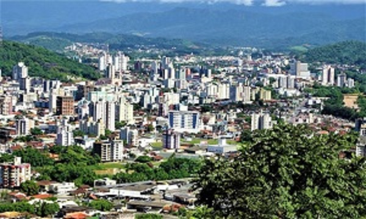
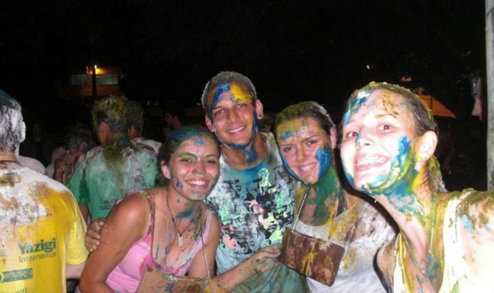
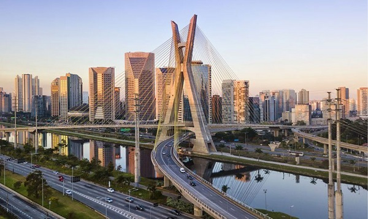

Jaraguá do sul
{kind=link}
Final de 2005, já formado no ensino médio, questões familiares acabam fazendo com que Wesley tenha que se mudar para uma cidade do interior de Santa Catarina, chamada Jaraguá do Sul, uma cidade que na época era um grande polo da indústria catarinense, abrigando empresas fortes de diversos setores.
Tecnólogo de RH

Assim que chegou na cidade, Wesley ingressou em um curso, Gestão de Recursos Humanos. Da para dizer que sua vida é dividida em duas antes deste curso e após. Conheceu tanta gente legal, o curso que exigia muito trabalho em equipe e oratória acabou tornando o Wesley "bom" em falar em público, embora nunca menos nervoso. Se formou, trabalhou em diversas empresas.
Florianópolis
{kind=link}
Final de 2010 Wesley se muda mais uma vez, agora para Florianópolis, onde foi sem grandes planos e acreditava que seria só de passagem, a vontade era voltar para São Paulo. Mas mal sabia ele que ali iria se iniciar um dos períodos mais fantásticos de sua vida.
A surpresa!
{kind=link}
Início de 2011 quando estava desanimado e contando as moedas para comprar uma passagem para SP, chega o dia do resultado do vestibular, prestado algumas semanas antes, sem a menor esperança de passar. E para uma grande surpresa, estava lá o nome dele, aprovado para o curso de Administração em uma das melhores Universidades do país. Ficou meio desacreditado, e desconfiado que poderia ter acontecido algum erro de sistema (rs).
Vivendo a UFSC
{kind=link}
Chegou o dia de matricula, e não tinha erro não. Wesley se tornou universitário. Logo as aulas começaram, o perrengue do trote que durava o semestre todo, mas era cheio de festas também. Iniciava ali um período de muito esforço e dedicação, mas também de amizades incríveis, experiências surreais. Após o primeiro ano ele decide deixar o trabalho para poder vivenciar a universidade em seu todo, e foi um grande acerto, passou 5 anos abusando da liberdade da grade de disciplinas, estagiando em pesquisas e órgãos públicos.
De volta a SP
{kind=link}
Como já dito, foi o período mais fantástico da sua vida, os amigos que fez ali, são para a vida toda “elos feitos por trote, jamais são desfeitos” diziam seus veteranos. Mas, apensar de ter sido um período incrível como Universitário na UFSC, era isso que o segurava, a cidade em si nunca foi uma “paixão”. Sendo assim, em 2017, Wesley Volta a morar em São Paulo.